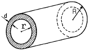

1과목: 자기탐상시험원리
1. 1년 이상 사용하지 않은 극간법 장치들을 점검한 결과가 아래와 같이 나타났을 때 수리 또는 보수 전에는 사용하기 곤란한 장비는?
2. 다음 중 강재의 자화곡선에 영향을 주는 인자가 아닌 것은?
3. 다음 중 기계 가공면의 피로균열(fatigue crack)검사에 가장 알맞는 자분탐상 시험방법은?
4. 다음 중 자분탐상시험에 사용되는 자분에 요구되는 특성으로 옳지 않은 것은?
5. 다음 중 일반적으로 최종적인 자분탐상시험의 시기는 언제가 적당한가?
6. 영구자석에서 자속선(Flux Line) 또는 자력선(Magnetic Lines)이란?
7. 자분탐상시험은 자분모양에 의해 불연속을 검출하므로 자분모양의 식별성은 중요하다. 이 자분 모양의 식별성을 향상시키기 위하여 고려할 사항이 아닌 것은?
8. 다음은 자기 센서를 이용한 누설자속탐상에서 선형결함의 상태와 누설자속과의 관계를 설명한 것이다. 틀린 것은?
9. 다음 중 비교적 적은 자계에서 자기포화가 되는 재료는?
10. 다음 중 자분탐상시험시 충격전류를 사용하여 자화했을 때 어떤 경우에 가장 효과적인가?
11. 다음 중 강(steel)으로 만든 와이어 로프(wire rope)의 단면적 손실, 표면의 마모, 선의 끊김 등의 건전성 여부 평가를 위하여 실시하는 비파괴검사법으로 가장 적절한 것은?
12. 다음 중 자분탐상시험의 대상물이 아닌 것은?
13. 형광자분탐상시험시 시험을 위해 어두움에 적응되는 일반적인 적응 시간은?
14. 외경 50mm의 원통형 시험체를 자분탐상시험시에 원주방향의 결함을 검출하는데 가장 적합한 자화 방법은?
15. 극성은 불변이나 주기적으로 크기가 변화하는 자화전류는 무엇인가?
16. 다음 중 무관련지시가 발생되는 이유로 적당하지 않은 것은?
17. 자분탐상검사의 단점에 대한 설명이다. 틀린 것은?
18. 반파직류 자분탐상기의 전류계를 교정하고자 DC션트메터(shunt-meter)를 사용하였다. 이 때 션트메터에 나타나는 측정 전류값은?
19. 도체에 흐르는 전류값(i)이 500[A]이며, 도체의 중심으로부터의 반경(r)이 4[cm]인 원주상의 자계의 세기 H[Oe]를 구하면?
20. 다음 중 홀(Hall)소자에 의한 누설자속탐상시험의 단점과 관련된 것은?
2과목: 자기탐상검사
21. 다음 중 자분탐상시험에서 금속 특성에 따른 예리한 무관련 지시가 잘 나타나는 경우라고 볼 수 없는 것은?
22. 전류관통법을 축통전법과 비교하여 특징을 열거한 것으로 틀린 것은?(단, 자계 = 자장)
23. 자화방법의 종류를 선택할 때 원칙적으로 고려해야 할 사항이 아닌 것은?(단, 자계 = 자장)
24. 강관에 대한 누설자속 탐상시험시 원주방향의 결함을 검출하기 위한 올바른 자화 방법은?
25. 자동 자분탐상검사에서 주로 사용되는 영상 검출장치에 관한 설명으로 다음 중 옳지 않은 것은?
26. 자분탐상시험에서 습식법을 적용하여 표면 바로 밑에 존재하는 결함을 검출할 수 있는데, 검출 가능한 이론적인 최대 깊이는?
27. 판재료에서 연화처리없이 압연방법으로 두께를 지나치게 감소시킬 때, 주로 판재의 표면에 가로 방향으로 나타나는 선형의 결함은?
28. 자분탐상시험시 다음 중 의사모양인지 아닌지를 가장 효과적으로 알아보는 방법은?
29. 자분탐상시험시 의사자분모양은 다음 중 어느 경우에 발생하는가?
30. 잠호 용접(Submerged Arc Welding)에서 간헐적인 넓고 흐린 자분모양이 습식법보다 건식법에서 잘 나타났다. 무슨 결함으로 판단되는가?
31. 다음 중 자분탐상시험시 건식법에 사용되는 자분의 형상으로 가장 이상적인 것은?
32. 내경 r, 외경 R, 두께 d 인 파이프 형태의 도체에 전류를 흘렸을 때 자계(자장)가 최대가 되는 곳은?

33. 강관이나 강봉을 연속적으로 누설자속탐상시의 주사 방식으로 적합하지 않는 것은?
34. 자분탐상시험시 냉간가공이 된 부분의 의사모양이 갖는 특징은?
35. 자외선조사등의 점검사항을 설명한 것으로 옳지 않은 것은?
36. 건식자분과 프로드법을 사용하여 시험할 때 시험체의 두께가 19mm를 초과하고 프로드 간격이 152mm일 때 적정한 자화전류 범위로 맞는 것은?
37. 전류관통법에 대한 설명으로 맞는 것은?
38. 비접촉법에 의한 자분탐상시험의 자화기기가 아닌 것은?
39. 자분탐상검사에 사용되는 자분에 대한 설명이다. 잘못된것은?
40. 직경 20㎜, 길이 80㎜의 단조품인 볼트나사 부위에 대한 원주방향 결함을 검출하는데 다음 중 가장 적합한 자분탐상시험의 조건은?
3과목: 자기탐상관련규격및컴퓨터활용
41. KS D 0213에 따라 자분탐상시험 후 시험기록시 시험체에 대해 기재할 사항에 속하지 않는 것은?
42. KS D 0213 A형 표준시험편중 직선형으로 인공 결함의 깊이가 30μm이고, 판 두께가 100μm라 할 때 표시 방법으로 옳은 것은?
43. 직접 접촉법, 축통전법을 사용하여 시험체를 자화하는 경우 ASME Sec.V의 요구사항에 따르면 직경 2인치, 길이 6인치의 시험체를 자화하는데 소요되는 전류 값으로 다음중 적당한 것은?
44. ASME code에 따르면 건식자분을 사용시 표면온도가 몇 도를 초과하면 수행하지 말아야 하는가?
45. KS W 4041의 규정에 따라 검사필 부품의 기호지정이 되었을 경우 합격품을 표시하는 방법은?
46. KS D 0213에 따라 자화할 때, 자계의 방향 및 강도를 확인하는데 사용되지 않는 것은?
47. 인터넷의 도메인 네임(Domain Name)분류 중 기관 표기로 "or" 에 해당하는 미국의 도메인 네임 분류로 맞는 것은?
48. 자분탐상시험법의 자화방법에 대한 기호 중 잘못 짝지워진 것은?
49. KS D 0213에서 자화에 대한 설명으로 틀린 것은?
50. KS D 0213에 따른 표준시험편에 관한 내용중 틀린 것은?
51. ASME SE-709에 따라 자분탐상시험을 실시할 때 극간의 거리가 50∼100mm인 경우 사용하는 교류형 요크(yoke)는 최소 몇 kg의 보정시편을 들어 올릴 수 있어야 하는가?
52. ASME SE 709에 의거 검사액 100㎖ 중 비형광자분의 부피는?
53. 시스템의 날짜, 시간, HDD 타입 등의 정보를 기억하고 있는 것은 무엇인가?
54. KS D 0213에서 P-1500Ⓓ의 의미로 알맞는 것은?
55. ASME Sec.V SE-709에 의해 자분탐상시험시 건식자분을 사용할 수 있는 최대 온도로 다음 중 맞는 것은?
56. 다음은 통신 프로토콜에 대한 설명이다. 가장 적절하지 않은 것은?
57. Windows98의 디스플레이 등록정보에서 할 수 있는 기능들 중 틀린 것은?
58. 자료 전송방식의 하나로서 한 글자를 이루는 각 비트들이 하나의 전송선을 통하여 한 비트씩 순서적으로 전송되는 방식은?
59. 원심 침전관을 사용하여 자분의 농도를 측정하고자 한다. 물을 매질로 하는 현탁액을 튜브에 넣은 후 얼마 후에 측정을 해야 하는가?
60. ASME Sec.Ｖ, Art.7에서 자장 지시계의 용도를 가장 잘 나타낸 것은?
4과목: 금속재료학
61. 스테인리스강의 주요 성분으로 맞는 것은?
62. Cu의 결정 구조는 FCC이다. lattice parameter가 3.61Å 일 때 Cu의 밀도는? (단, Cu의 원자량은 63.54 gr이고, Avogadro 수는 6.023 × 1023 molecule/mole이다)
63. Aℓ - Cu - Mg 합금에 있어서의 S′ 중간상의 형상을 옳게 나타낸 것은?
64. 동합금중에서 가장 높은 강도와 경도를 얻을수 있는 석출 경화성 합금은?
65. 항복점이 크고 내마모성이 양호한 레일과 차륜을 만들려고 할 때 어느 재료를 선택하는 것이 가장 좋겠는가?
66. 응고 온도 범위가 넓고 역편석(inverse segregation)이 나타나는 것은?
67. 공정형 상태도를 나타내는 가장 대표적인 합금은?
68. 침상 주철(acicular cast iron)의 바탕의 주 조직은?
69. 구상흑연 주철의 첨가제, Zr, U, Ti의 환원용, 전기 방식용 양극으로 사용되는 비철 금속은?
70. 쾌삭강(free cutting steel)은 어느 성분을 더 함유시킨 것인가?
71. 탄소강판이나 기계가공부에 존재하는 결함의 검출에 적합한 비파괴 시험은?
72. 열전대 중 가장 높은 온도를 측정할 수 있는 것은?
73. 고체 침탄법에서 침탄제로써 가장 우수한 것은?
74. 냉각속도가 600℃/sec 에 도달하면 Ar' 변태는 완전히 없어지고 Ar“ 변태만이 일어나 완전 마텐자이트의 조직으로 되는 것은?
75. 합금의 미세화 처리를 목적으로 용융금속에 금속 나트륨을 첨가한 것은?
76. Ni 합금에서 염산에 대한 내식성의 향상을 위하여 첨가하는 원소로 가장 좋은 금속은?
77. 강을 침탄한 후 1, 2차 담금질을 하는 목적은?
78. 강에서 발생하는 백점(flake)의 주 원인은?
79. 금속의 용해에 Si 등의 산성 산화물이 생기는 경우 사용해서는 안되는 내화물은?
80. Cr-Mo강에 대한 설명이 틀린 것은?
5과목: 용접일반
81. 다음의 연강 용접이음 중 이음의 정적강도가 가장 작은 이음의 종류는?
82. 고속 회전운동을 하는 한쪽 재료에 다른 한쪽을 접촉시키고 축방향으로 힘을 가하여 생성되는 열을 이용하여 용접하는 것은?
83. 일반적인 용접작업의 순서를 나열한 것으로 다음 중 가장 적합한 것은?
84. 다음 용접의 종류 중 비가열식 압접인 것은?
85. 용적이 40리터인 산소 용기의 고압계가 90㎏f/㎝2 으로 나타났다면 시간당 300리터의 산소를 소비하는 팁으로는 이론적으로 몇 시간 용접할 수 있는가? (단, 산소와 아세틸렌의 혼합비는 1:1 이다)
86. 가동 철심형 아크 용접기의 특성 설명으로 틀린 것은?
87. 연납땜과 경납땜은 땜납의 융점 온도 몇 ℃를 기준으로 하는가?
88. 저수소계 피복아크 용접봉의 건조온도 및 건조시간으로 다음 중 가장 적합한 것은?
89. 주철의 아크 용접시 균열 방지방법이 아닌 것은?
90. 1차 입력전원이 24.2[KVA]인 피복 아크용접기를 1차 전원 전압 220[V]에 접속하고자 할 경우 퓨즈(fuse) 용량으로 가장 적합한 것은?
91. 다음 중 예열불꽃이 강할 때 절단에 미치는 영향으로 올바른 것은?
92. 정격 2차전류가 200A, 정격 사용율이 30%인 용접기로 180A로 용접할 경우 허용 사용율은 약 몇 % 인가?
93. 다음 중 겹쳐놓은 두개의 용접재 한쪽에 둥근 구멍 대신에 좁고 긴 홈을 만들어 놓고 그 곳을 용접하는 이음의 형태는?
94. 피복아크 용접회로에서 전류가 용접전원에서 흐르기 시작하여 용접전원으로 되돌아오는 순서로 가장 적합한 것은?
95. 용접전류 300A, 아크전압 35V, 아크길이 3mm, 용접속도 20cm/분의 용접 조건으로 피복 아크용접을 실시할 경우 아크가 단위길이 1cm당 발생하는 전기적 에너지는?
96. AW-300 무부하 전압 80V, 아크 전압 30V인 교류아크 용접기를 사용할 경우 용접기의 역률 및 효율은 몇 % 인가?(단, 용접기의 내부 손실은 5kW 이다.)
97. 비드밑 균열의 비파괴 검사방법으로 가장 적합한 것은?
98. 불활성가스 텅스텐 아크용접(TIG용접)에서 아크쏠림(Arc Blow 또는 Magnetic Blow) 현상이 일어나는 원인이 아닌것은?
99. 용접부의 기공 발생에 대한 원인으로 가장 관계가 적은 것은?
100. 피복 금속아크 용접시 모재측의 발열량의 크기를 순서대로 표시한 것으로 옳은 것은?